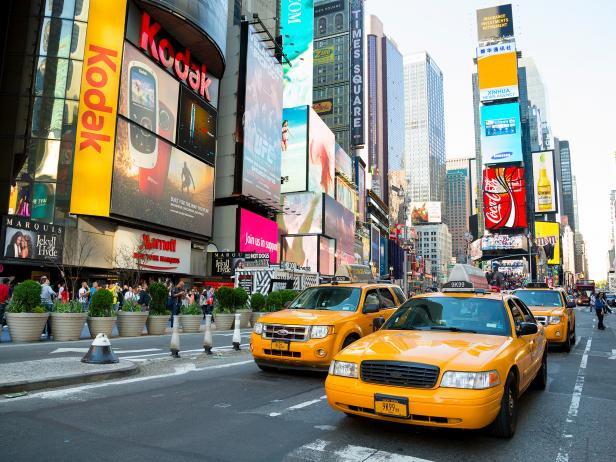

The most visited tourist destination in the world, with over 45 million visitors annually, it is very easy to arrive in Paris with huge expectations: of grand vistas, of budding writers in every cafe, of romance on the Seine and rude waiters. It is easy to see in Paris the city of love, or the city of lights. But it is also important to see in it the city that has seen 4 revolutions (to date), 18 kings named Louis and at least 2 occupying forces. Learn all about Paris with our helpful travel guide. And this is not even all there is to know about Paris. Outside of the well beaten path of the Eiffel Tower and Notre Dame, there are 20 arrondissements to explore, each with their own character and version of Parisian life.
